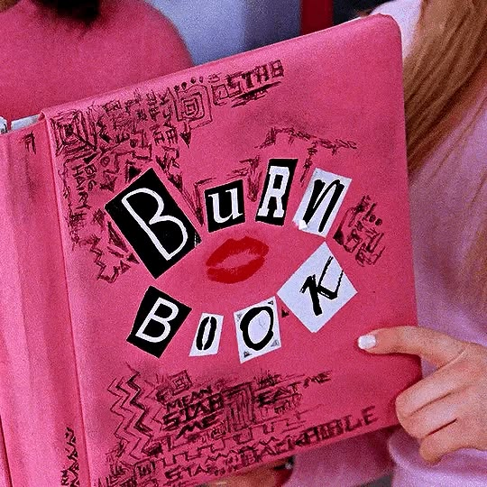

A História: Entrando na Selva de Pedra (e do Colégio).

A trama acompanha Cady Heron (Lindsay Lohan), uma adolescente que passou a vida inteira sendo educada em casa pelos pais zoólogos na África. Ela rapidamente chama a atenção das "Plásticas", o grupo mais popular, rico e temido do colégio, liderado pela implacável e carismática Regina George (Rachel McAdams). Ao se infiltrar no grupo para destruí-lo a pedido de seus novos amigos Janis (Lizzy Caplan) e Damian (Daniel Franzese), Cady acaba se corrompendo pelo próprio poder de ser popular. Meninas Malvadas é divertido, inteligente e obrigatório. Mais do que uma comédia pastelão sobre o colegial, é um manual atemporal sobre amizade, identidade e a importância de ser fiel a si mesmo (mesmo que você acabe "quebrando a coroa da rainha em vários pedacinhos").
Por: Priscila Zocche